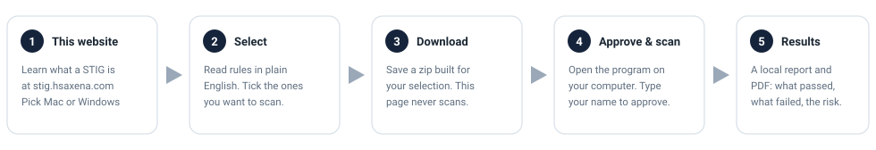

The checklists are free
The US Department of Defense publishes STIGs for Windows, macOS, Linux, databases and hundreds of other systems. Anyone may download them.
Free Department of Defense checklists, in plain English, scanned on your own computer.
If you look after a Mac or Windows PC, you can read the matching DoD checklist here in plain English, then download a scanner that runs only on your machine.
The US Department of Defense publishes free STIG checklists — ranked settings that lock down a common system. Anyone may download them.
This tool checks your Mac or Windows PC against the matching checklist and lists configuration gaps in plain English: settings that do not yet match the checklist.
Today the tool finds misses and writes a report (including a PDF). It does not walk you through guided fixes — that may come later.
For a first demo, use CAT I only. Those are the most serious items, and the list is short.
Pick the computer you will scan. The next page shows only CAT I rules. Nothing downloads until you ask.
The US Department of Defense publishes STIGs for Windows, macOS, Linux, databases and hundreds of other systems. Anyone may download them.
Each guide is a few hundred rules. Applying one means reading every line, ranking the risk, and turning it into a change on a real machine.
No account, nothing to buy. You read the checklist here, then run a scanner on your own computer.
A static walk-through uses labeled sample data so you can see the path before you pick a computer. Longer essays live on hsaxena.com, not on this product site.
A STIG (Security Technical Implementation Guide) is a checklist the Defense Information Systems Agency (DISA) writes for the Department of Defense. Each one locks down a named product. A typical desk guide has on the order of one or two hundred settings, ranked by how serious a miss would be: CAT I first, then II, then III. DISA releases many of these guides at public.cyber.mil. This site is not a DISA product.

This page never scans. You pick a computer, choose rules, download a program, approve each check on that machine, and get a report.

Pick one to load its checklist. Servers, Linux and databases stay on the command line — this page is for a desk Mac or Windows PC.
Loading the catalogue…
Approximate public GoatCounter stats for this website. These are not Department of Defense adoption figures, customer counts, or organisational use.
Loading public stats…
dl.dod.cyber.mil (the host blocks the request —
CORS — and many networks block it too). The official package is
fetched later, on your machine, by the scanner (or by
python3 -m stigprep fetch), and is checked against the
pinned SHA-256 when one is recorded and always against the validated
rule count. If that host is blocked, use
public.cyber.mil/stigs/downloads.
Public site: https://stig.hsaxena.com.
| Rule | Severity | What it asks of you | Kind |
|---|
The zip is a configured copy of this project. Double-click it on the computer you picked. Approval and scanning happen there, not here.
STIG Checker.bat.
Mac → right-click STIG Checker.command → Open.
If Python is missing, the program offers a private copy from python.org.
Read every command, type your name, then scan. A PDF with a remaining-risk
story lands in the files folder.